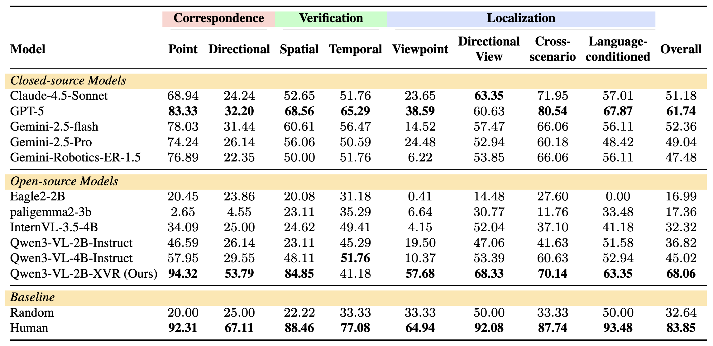
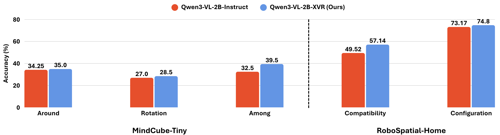
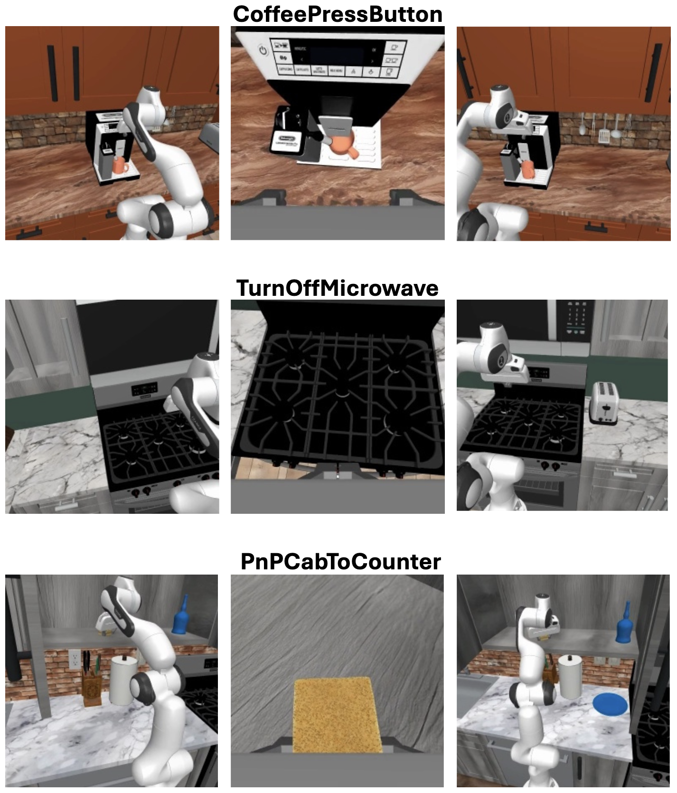
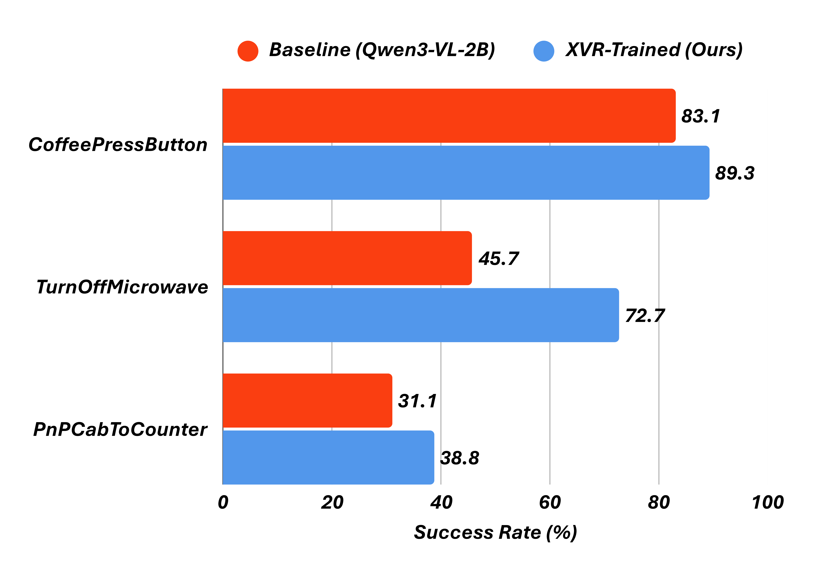

XVR is a large-scale dataset of 100K multi-view VQA samples designed to teach VLMs spatial reasoning across multiple views, spanning three fundamental tasks: Correspondence, Verification, and Localization.
XVR is a large-scale dataset of 100K multi-view VQA samples designed to teach VLMs spatial reasoning across multiple views, spanning three fundamental tasks: Correspondence, Verification, and Localization.
Vision-language models (VLMs) have achieved impressive results on single-view vision tasks, but lack the multi-view spatial reasoning capabilities essential for embodied AI systems to understand 3D environments and manipulate objects across different viewpoints. In this work, we introduce Cross-View Relations (XVR), a large-scale dataset designed to teach VLMs spatial reasoning across multiple views. XVR comprises 100K vision-question-answer samples derived from 18K diverse 3D scenes and 70K robotic manipulation trajectories, spanning three fundamental spatial reasoning tasks: Correspondence (matching objects across views), Verification (validating spatial relationships), and Localization (identifying object positions). VLMs fine-tuned on XVR achieve substantial improvements on established multi-view and robotic spatial reasoning benchmarks (MindCube and RoboSpatial). When integrated as backbones in Vision-Language-Action models, XVR-trained representations improve success rates on RoboCasa. Our results demonstrate that explicit training on cross-view spatial relations significantly enhances multi-view reasoning and transfers effectively to real-world robotic manipulation.
We organize XVR into three task categories inspired by Structure-from-Motion (SfM), operationalized through eight specific tasks.
Correspondence identifies matching elements across views that represent the same physical entity, Verification checks whether multi-view observations are geometrically or temporally consistent, and Localization determines relative camera positions and which viewpoint corresponds to specific spatial conditions.
XVR provides the highest mean images per sample (4.32) among training datasets, with supervision spanning both general and robotic domains.
| Dataset | Split | # Imgs/sample | Domain | # Images | # QAs |
|---|---|---|---|---|---|
| SpatialVLM | Train, Eval | 1.00 | General | 10M | 2B |
| RoboSpatial | Train, Eval | 1.00 | General | 1M | 3M |
| MindCube | Train, Eval | 3.37 | General | 3.2K | 21K |
| MultiSPA | Train, Eval | 1.85 | General | 1.1M | 27M |
| XVR (Ours) | Train, Eval | 4.32 | General, Robotic | 447K | 103K |
Qwen3-VL-2B-XVR achieves a 1.8× improvement over its base model and ranks first among all evaluated models, surpassing both open-source and closed-source alternatives. Notably, it exceeds human performance on Point Correspondence (94.32% vs. 92.31%, +2.01%).

Training on XVR improves Qwen3-VL-2B across all tasks on MindCube-Tiny and RoboSpatial-Home, with the largest gains in Compatibility (+7.6%) and Among (+7.0%). These improvements occur despite substantial distribution shifts, validating that cross-view relation reasoning captures general spatial principles.

We extend XVR-trained VLMs into Vision-Language-Action (VLA) models and evaluate on three RoboCasa manipulation tasks. XVR-trained models consistently improve manipulation performance: CoffeePressButton (83.1% → 89.3%, +6.2%), TurnOffMicrowave (45.7% → 72.7%, +27.0%), and PnPCabToCounter (31.1% → 38.8%, +7.7%). The largest gains occur on TurnOffMicrowave, where cross-view spatial disambiguation is most critical.


TBD